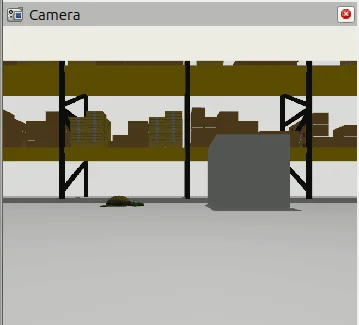
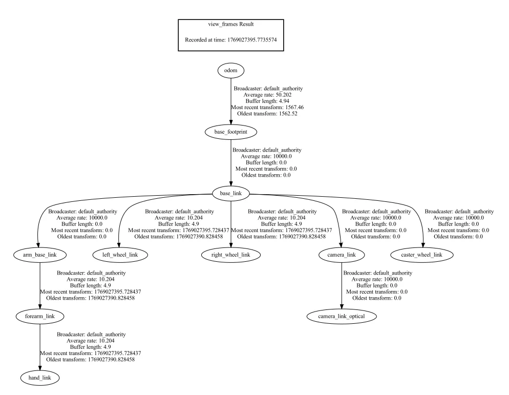
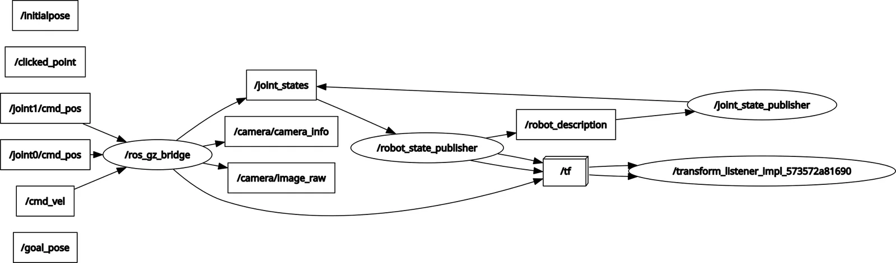

Overview
I developed a differential-drive robot simulation in Gazebo Harmonic with a 2-DOF arm, RGB camera and IMU. The robot description is organized in URDF/Xacro, and the launch and bridge configuration connect the simulated hardware with ROS 2. I have also configured robot_localization EKF for simulated wheel odometry and IMU data. I am integrating Nav2 and RTAB-Map to add autonomous navigation and SLAM.
Implementation
- Modeled the base, wheels, arm and camera in URDF/Xacro and checked the link and joint frames in RViz2.
- Set up
ros_gz_bridgefor velocity and joint commands, simulated wheel odometry, IMU and camera topics. - Teleoperated the base and sent position commands to the arm in the recorded Gazebo demo.
- Fixed a camera feed that exposed a topic without publishing usable images by configuring Gazebo’s sensors system plugin.
- Configured
robot_localizationEKF with/wheel/odometryand/imu/data_rawfor planar state estimation. Nav2 and RTAB-Map SLAM integration is in progress.
Debugging and current work
The first camera setup created a topic but no usable images. I checked the Gazebo topic path and the ROS bridge, then added Gazebo’s sensors system plugin to the world, and the image stream started working. Nav2 and RTAB-Map are the next step toward autonomous navigation and SLAM in this simulation; that integration is not finished.
Recorded Gazebo demo
Screenshots and recordings





